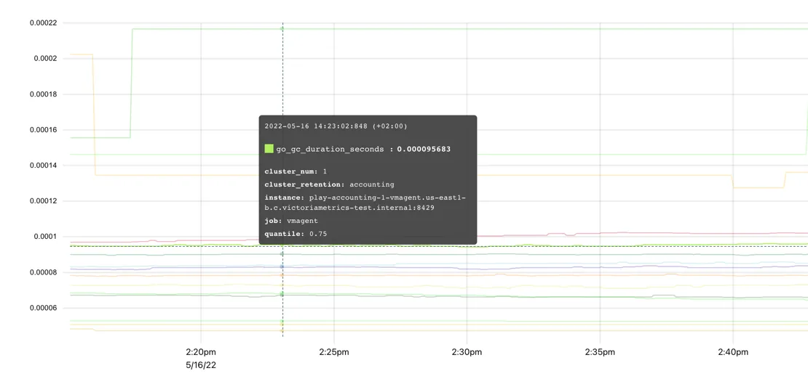

核心概念
本文主要阐述一些词汇概念的基本定义，如果你对这些基本概念或词汇没有基本的了解，对本书中的大部分内容的理解上都会有一些困难。
什么是 Metric（度量指标）
简单来说，metric是对事物的数值测量或观察。
Metric 最常见的用途包括：
- 检查系统在特定时间段内的行为；
- 将行为变化与其他测量结果相关联；
- 观察或预测趋势；
- 如果度量标准超过阈值，则触发事件（告警）。
在其他的 tsdb 中，也有使用 measurement 这个单词的，其表达的核心内容是一样的。
Metric 结构
__name__ (指标名)
让我们从一个例子开始。为了追踪我们的应用程序处理了多少请求，我们将定义一个名为requests_total的指标。
在这里你可以更具体一些，比如说requests_success_total（仅针对成功的请求）或者request_errors_total（针对失败的请求）。
选择一个指标名称非常重要，它应该能够清楚地向每个看到它的人传达正确信息：实际测量到了什么内容；就像编程中的变量名一样。 我们建议遵循Prometheus的指标命名规范。对于 VictoriaMetrics 来说，没有严格的限制，所以任何指标名称和 Label 名称都是可以接受的。但是遵循这个约定有助于保持名称有意义、描述性强，并且清晰易懂给其他人。遵循这个约定是一个好习惯。
Labels（标签）
每个指标都可以包含额外的元信息，以 Label 对的形式呈现：
requests_total{path="/", code="200"}
requests_total{path="/", code="403"}指标元信息，即一组用花括号括起来的键值对，为我们提供了request被处理的path和status code的上下文。Label 的值始终是string类型。VictoriaMetrics数据模型是无模式的（No Scheme），即没有预先定义的表结构，用户不需要预先定义指标名称或其标签，而是可以随时添加或更改已采用的指标。
实际上，指标名称也是一个具有特殊名称__name__的 Label。因此，以下两个系列是相同的：
requests_total{path="/", code="200"}
{__name__="requests_total", path="/", code="200"}Labels可以自动附加到通过vmagent或Prometheus采集的 timeseries 上。VictoriaMetrics支持对查询API强制执行 Label 过滤器以实现数据的软隔离。然而，真正的数据隔离可以通过多租户实现。
最佳实践
每个 Metric 都可以包含任意数量的key="value"标签。良好的实践是保持这个数量可控。否则，处理包含大量Label的数据将会很困难。默认情况下，VictoriaMetrics将每个Metric的Label数限制为30，并丢弃其他标签。如果需要，可以通过-maxLabelsPerTimeseries命令行参数来更改此限制（但不建议这样做）。
每个Label的值都可以包含任意字符串值。良好的实践是使用简短而有意义的标签值来描述指标属性，而不是讲述它们的故事。例如，environment="prod"是可以接受的正常Label，但log_message="long log message with a lot of details..."就不是可接受的。默认情况下，VictoriaMetrics将标签值大小限制为16kB。可以通过-maxLabelValueLen命令行参数来更改此限制（同样强烈不建议这样做）。
控制唯一标签值的数量非常重要，因为每个唯一标签值都会导致一个新 timeseries 产生。尽量避免使用易变性较高的标签值（如会话ID或查询ID），以避免过多资源使用和数据库减速问题发生。
Timeseries（时间序列）
一个指标名称和其 Label 的组合定义了一个 timeseries。例如，requests_total{path="/", code="200"} 和 requests_total{path="/", code="403"} 是两个不同的 timeseries，因为它们在code标签上有不同的值。
唯一时间序列的数量对数据库资源用量产生影响。详细信息请参阅什么是活跃时间序列以及什么是高流失率。
Cardinality（基数）
唯一时间序列的数量被称为基数。过多的唯一时间序列被称为高基数。高基数可能导致在VictoriaMetrics中增加资源使用量。请参阅这篇文档以获取更多详细信息。
Raw samples（原始样本）
每个唯一的时间序列可以由任意数量的(value，timestamp)数据点（也称为原始样本）组成，它们按照timestamp排序。value是双精度浮点数。timestamp是具有毫秒精度的 Unix 时间戳。
以下是一个Prometheus文本格式的单个原始样本的示例：
requests_total{path="/", code="200"} 123 4567890requests_total{path="/", code="200"}用于标识给定样本的相关 timeseries。123是一个样本值。4567890是可选的样本时间戳。如果缺失，则数据被存储到VictoriaMetrics中时使用数据库的当前时间戳。
Timeseries resolution（时间序列粒度）
分辨率是 timeseries 的 samples 之间的最小间隔。考虑以下示例：
----------------------------------------------------------------------
| <time series> | <value> | <timestamp> |
| requests_total{path="/health", code="200"} | 1 | 1676297640 |
| requests_total{path="/health", code="200"} | 2 | 1676297670 |
| requests_total{path="/health", code="200"} | 3 | 1676297700 |
| requests_total{path="/health", code="200"} | 4 | 1676297730 |
....这里有一个代表请求总数的 timeseries{path="/health", code="200"}，每30秒更新一次值。这意味着它的分辨率也是30秒。
在 Pull 模式中，分辨率等于抓取间隔，并由监控系统（服务器）控制。对于 Push 模式，分辨率是样本时间戳之间的间隔，并由客户端（指标收集器）控制。
尽量保持时间序列的分辨率一致，因为某些MetricsQL 函数可能期望如此，以免计算出『奇怪』的结果。
Metric 类型
在 VictoriaMetrics 内部，并 metric type 的概念。此概念存在是为了帮助用户理解度量是如何测量的。有四种常见的度量类型。
Counter（计数器）
Counter 是一种用于统计某些事件的发生次数的 Metric。它的值是累加的，随着时间增加或保持不变，在一般情况下不会减少。唯一的例外是当计数器重置为零时，例如计数器重置。当暴露 Counter 指标的服务重新启动时，可能会发生计数器重置。因此，Counter指标显示了自服务启动以来观察到的事件数量。
在编程中，Counter 是一个变量，在每次发生某个事件时递增其值。

vm_http_requests_total 是一个典型的 Counter 示例。上面图表的解释是，时间序列 vm_http_requests_total{instance="localhost:8428", job="victoriametrics", path="api/v1/query_range"} 在下午1点38分到1点39分之间迅速变化，然后在1点41分之前没有任何变化。
Counter用于测量事件数量，例如请求、错误、日志、消息等。与计数器一起使用最常见的 MetricsQL 函数有：
rate- 计算指标每秒平均变化速度。例如，rate(requests_total)显示平均每秒服务多少个请求；increase- 计算给定时间段内指标的增长情况，时间段由方括号中指定。例如，increase(requests_total[1h])显示过去一小时内服务的请求数量。
Counter 可以具有小数值。例如，request_duration_seconds_sum 计数器可能会对所有请求的持续时间进行求和。每个持续时间可能以秒为单位具有小数值，如0.5 秒。因此所有请求持续时间的累积总和也可能是小数。
建议在 Counter 指标名称中添加 _total、_sum 或 _count 后缀，这样人们就可以轻松区分这些指标与其他类型的指标。
Gauge（仪表）
Gauge 用于测量可以上下变化的值：
图表上的度量指标 process_resident_memory_anon_bytes 显示了应用程序在每个给定时间点的内存使用情况。它经常变化，上下波动，显示进程如何分配和释放内存。在编程中，gauge 是一个变量，你可以将其设置为随着变化而改变的特定值。
以下是 gauge 的使用场景：
- 测量温度、内存使用情况、磁盘使用情况等；
- 存储某个过程的状态。例如，如果配置重新加载成功，则可以将 gauge
config_reloaded_successful设置为1；如果配置重新加载失败，则设置为0； - 存储事件发生时的时间戳。例如，
config_last_reload_success_timestamp_seconds可以存储最后一次成功配置重新加载的时间戳。
与 gauges 最常用的 MetricsQL 函数是聚合函数和滚动函数。
Histogram（直方图）
Histogram是一组具有不同vmrange或le标签的 Counter 指标。 vmrange或le标签定义了特定bucket（桶）的测量边界。当观察到的测量值命中特定的bucket时，相应的Counter会递增。
直方图桶通常在其名称中带有_bucket后缀。例如，VictoriaMetrics使用vm_rows_read_per_query直方图跟踪每个查询处理的行分布情况。该 Histogram 的暴露格式如下：
vm_rows_read_per_query_bucket{vmrange="4.084e+02...4.642e+02"} 2
vm_rows_read_per_query_bucket{vmrange="5.275e+02...5.995e+02"} 1
vm_rows_read_per_query_bucket{vmrange="8.799e+02...1.000e+03"} 1
vm_rows_read_per_query_bucket{vmrange="1.468e+03...1.668e+03"} 3
vm_rows_read_per_query_bucket{vmrange="1.896e+03...2.154e+03"} 4
vm_rows_read_per_query_sum 15582
vm_rows_read_per_query_count 11其中 vm_rows_read_per_query_bucket{vmrange="4.084e+02...4.642e+02"} 2 这一行表示自上次VictoriaMetrics启动以来，vmrange的值在(408.4 - 464.2]区间的查询有2个。
以 _bucket 后缀结尾的计数器可以使用 histogram_quantile 函数估算观测测量值的任意百分位数。例如，以下查询返回在过去一小时内每个查询读取的行数的估算第99百分位数（见方括号中的 1h）：
histogram_quantile(0.99, sum(increase(vm_rows_read_per_query_bucket[1h])) by (vmrange))这个查询的执行逻辑如下：
- 增加
(vm_rows_read_per_query_bucket[1h])计算每个桶每个实例在过去一小时内的事件数量。 sum(...)按(vmrange)计算相同vmrange值的每个实例桶的事件总数。histogram_quantile(0.99, ...)在步骤 2 返回的vmrange桶上计算第 99 百分位数。
histogram 类型还暴露了额外两个附加计数器，以 _sum 和 _count 后缀结尾。
vm_rows_read_per_query_sum是所有观测到的测量值的总和，例如自上次VictoriaMetrics启动以来由所有查询服务的行数之和。
vm_rows_read_per_query_count是观测到的事件总数，例如自上次VictoriaMetrics启动以来观测到的查询总数。
这些计数器允许在特定回溯窗口内计算平均测量值。例如，以下查询计算最近5分钟（方括号中为5m）每个查询读取行数的平均值：
increase(vm_rows_read_per_query_sum[5m]) / increase(vm_rows_read_per_query_count[5m])使用 github.com/VictoriaMetrics/metrics 包，可以通过以下方式在Go应用程序中使用vm_rows_read_per_query直方图：
// define the histogram
rowsReadPerQuery := metrics.NewHistogram(`vm_rows_read_per_query`)
// use the histogram during processing
for _, query := range queries {
rowsReadPerQuery.Update(float64(len(query.Rows)))
}我们来看看每次调用rowsReadPerQuery.Update时，会发生什么：
- 计数器
vm_rows_read_per_query_sum的值将增加query.Rows表达式的长度； - 计数器
vm_rows_read_per_query_count增加1； - 只有在观察到的值在
vmrange定义的范围（桶）内时，计数器vm_rows_read_per_query_bucket才会递增。
这样一组计数器指标可以在Grafana中绘制热力图并计算分位数：
Grafana对带有vmrange标签的桶不理解，因此在构建Grafana中的热力图之前，必须使用prometheus_buckets函数将带有vmrange标签的桶转换为带有le标签的桶。
histogram 通常用于测量延迟分布、元素大小（例如批处理大小）等。VictoriaMetrics支持两种直方图实现：
- Prometheus Histogram。大多数客户端库都支持这种经典的 Histogram 实现方式。Prometheus Histogram 要求用户静态定义范围（bucket）。
- VictoriaMetrics Histogram 由 VictoriaMetrics/metrics 工具库支持。Victoriametrics Histogram 会自动处理桶边界，因此用户无需考虑它们。
我们建议您在开始使用直方图之前阅读以下文章：
- Prometheus histogram
- Histograms and summaries
- How does a Prometheus Histogram work?
- Improving histogram usability for Prometheus and Grafana
Summary（摘要）
Summary 与 Histogram 非常相似，用于计算分位数。主要区别在于 Summary 是在客户端进行计算的，因此指标公开格式已经包含了预定义的分位数：
go_gc_duration_seconds{quantile="0"} 0
go_gc_duration_seconds{quantile="0.25"} 0
go_gc_duration_seconds{quantile="0.5"} 0
go_gc_duration_seconds{quantile="0.75"} 8.0696e-05
go_gc_duration_seconds{quantile="1"} 0.001222168
go_gc_duration_seconds_sum 0.015077078
go_gc_duration_seconds_count 83Summary 的可视化非常直观：

这种方法使得 Summary 更易于使用，但与 Histogram 相比也存在显著的限制：
- 无法计算多个 Summary 指标的分位数，例如
sum(go_gc_duration_seconds{quantile="0.75"})、avg(go_gc_duration_seconds{quantile="0.75"})或max(go_gc_duration_seconds{quantile="0.75"})不会返回从应用程序的多个实例收集到的go_gc_duration_seconds指标的预期第75百分位数。有关详细信息，请参阅本文。 - 无法计算除已经预先计算过的分位数之外的其他分位数。
- 无法针对在任意时间范围内收集到的测量值计算分位数。通常，Summary 分位数是在固定时间范围内（如最近5分钟）计算出来的。
Summary 通常用于跟踪延迟、元素大小（例如批处理大小）等预定义百分比。